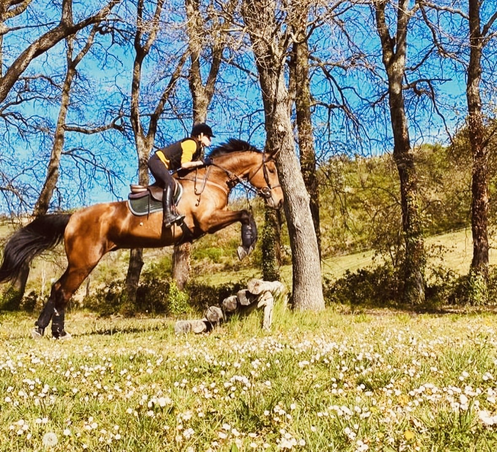
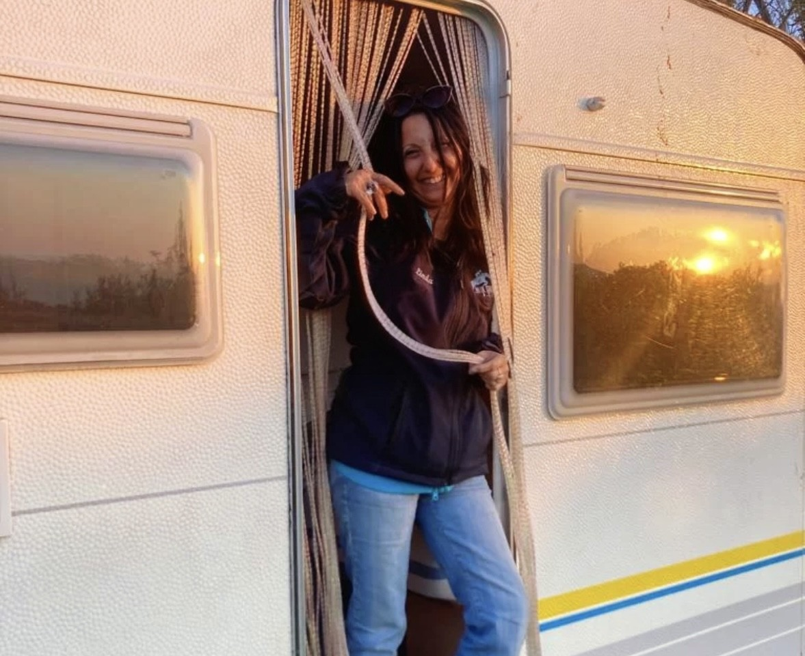
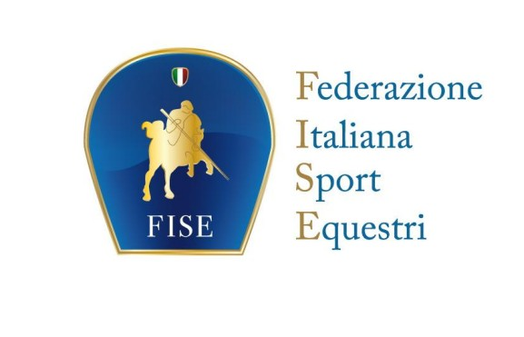
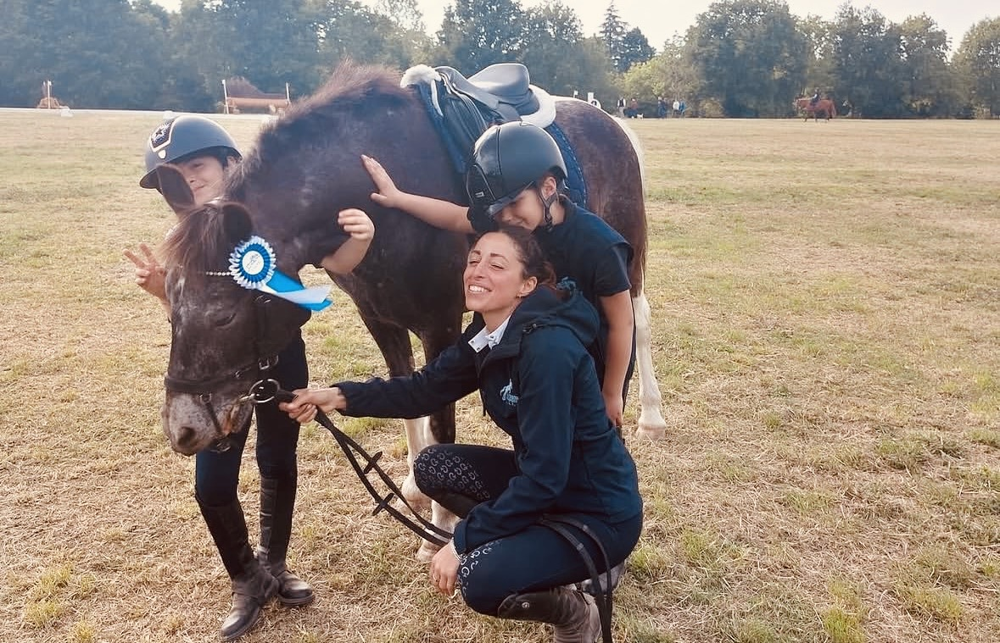

Perché Blue Country?

Il nome del centro prende vita da Blue, un cavallo speciale e insostituibile, che con la sua energia e la sua bellezza ha ispirato la nascita di questo bellissimo sogno.
Il Centro Ippico Blue Country ASD nasce proprio da questa grande passione per i cavalli e dal desiderio di creare un punto di incontro per tutti gli appassionati di equitazione.
Guidati da un team di istruttori qualificati e di grande esperienza, offriamo un ambiente sereno e professionale sia per chi muove i primi passi in sella, sia per i cavalieri più esperti. Il benessere degli animali e il rispetto per la natura sono i valori fondamentali che guidano ogni nostra attività quotidiana.


